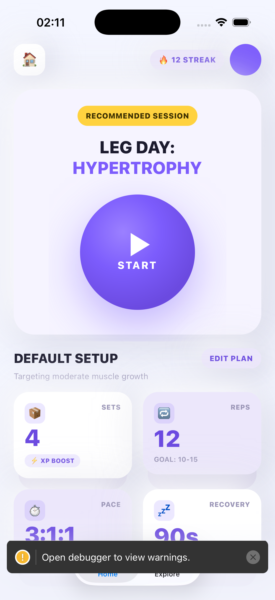

Phương pháp: chụp màn hình simulator (xcrun simctl) · App
com.unicorn.app · Ngày 2026-05-23

Yêu cầu: bỏ viền tối, theo style neumorphism — "tím nổi mềm 3D"
Yêu cầu: 2 lớp — lớp trên giữ nguyên, lớp nền dưới màu nhạt lú ra
Neo.cardLayer (#E3DEF2) —
không hardcode hex trong component.
src/theme/colors.ts — thêm token cardLayer
src/features/home/components/workout-stat-card.tsx
— bọc View + lớp nền absolute
src/features/home/components/start-workout-button.tsx
— viết lại, bỏ rim tối